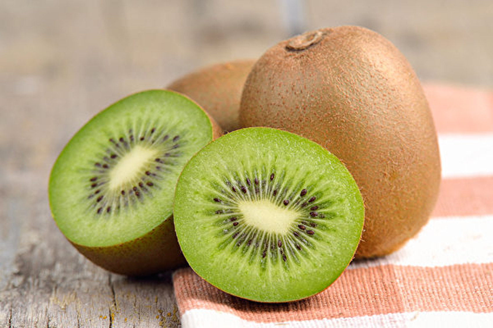

奇異果
奇異果連皮食更健康嗎
相比果肉，奇異果皮擁有更多黃酮類化合物、抗氧化劑、維他命C，纖維亦多2倍。吃果皮前，可刮掉皮上的細絨毛，會比較容易食用，或選擇金奇異果。營養師吳耀芬表示，連皮當然會額外攝取纖維，不過口感不是人人能接受，而奇異果果肉也含有纖維，可按個人需求選擇。
奇異果要飯前吃還是飯後吃
飲食金字塔建議一般成年人每日最少進食2份水果，1份水果相當於2顆奇異果。營養師吳耀芬建議選擇不同的水果，以吸收不同的營養素。奇異果沒有特定的進食時間，可以根據自己的飲食習慣進食就可以。她指出，飯前吃水果，有助於減少正餐分量，幫助體重管理。而飯後進食水果，可以幫助某些營養素的吸收，例如飯後吃有利於鐵質吸收。

奇異果功效：防便祕、增強飽腹感
營養師吳耀芬指出，綠奇異果和金奇異果，都適合一般人的日常食用。一般而言，金奇異果比綠奇異果的價格高，可根據個人喜好決定選擇。她建議，預防便祕，可選擇含較多膳食纖維的綠奇異果。
資料來源:
圖片來源: